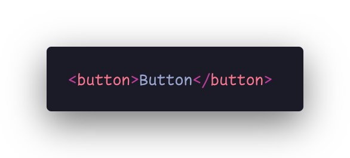
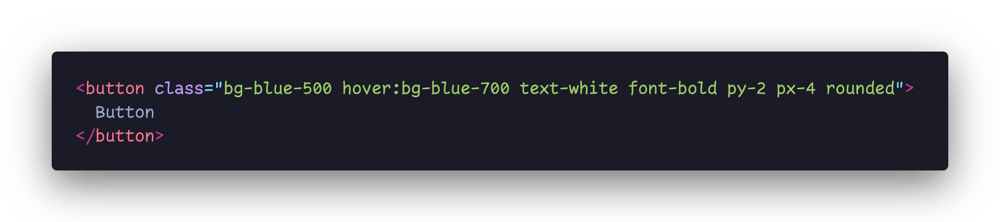
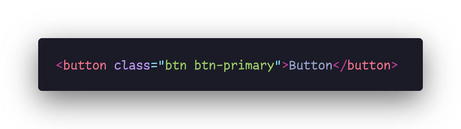

Types of CSS Frameworks
Classless / Minimalist:
Learning curve: Low, CSS file size: Light
These frameworks offer a minimal set of styles and components,
focusing on simplicity and flexibility. They provide a starting
point for customization rather than a complete UI solution.
If you're concerned about page load times and performance, a
lightweight framework can be beneficial. These frameworks typically
have smaller file sizes and fewer dependencies, resulting in faster
loading times for your web pages. They focus on essential styles and
components, minimizing the impact on performance.
Project Prototyping: When building a quick prototype or proof of
concept, a lightweight framework can help you get started rapidly.
Its minimalistic approach allows you to set up a basic structure and
layout quickly, allowing you to focus more on the core functionality
or design aspects of your project.
Example button:

Utility-First / Atomic:
Learning curve: High, CSS file size: Light (if configured with
postcss/purgecss)
Atomic CSS libraries follow a modular approach, where styles are
broken down into small, single-purpose utility classes. These
classes represent individual styling properties, such as margin,
padding, typography, colors, and positioning. The primary advantage
of atomic CSS is that it allows for highly modular and reusable
styles. This approach is beneficial when you want to create a large
number of consistent and reusable styles across your project.
If you are building a custom design system for your project, an
atomic CSS library can be a valuable tool. Atomic classes provide a
shared language for defining and applying styles across your design
system, ensuring visual consistency and ease of maintenance. It
allows you to create a cohesive set of reusable styles that can be
used consistently throughout your project.
Atomic CSS libraries offer a standardized set of utility classes
that can be easily understood and adopted by a development team.
This promotes consistency in styling and facilitates collaboration
among team members, as they can quickly grasp and apply the atomic
classes without extensive knowledge of CSS.
Atomic CSS libraries excel in rapid prototyping scenarios. Since
atomic classes are focused on specific styling properties, you can
quickly assemble and apply them to elements without the need to
write custom CSS rules. This speeds up the prototyping process,
allowing you to iterate and experiment with different styles and
layouts easily.
Example button:

Comprehensive / General Purpose:
Learning curve: Mid, CSS file size: Mid-to-heavy, but can be light
if configured with postcss/purgecss
These frameworks provide a wide range of pre-designed components,
layouts, and utility classes for building complete websites or web
applications. They often include CSS, JavaScript, and sometimes
additional tools for tasks like responsive design and cross-browser
compatibility.
If you want to maintain a consistent design language and user
experience throughout your project, a comprehensive framework can be
beneficial. They often come with a unified set of styles,
components, and design patterns, ensuring a cohesive look and feel
across different pages and sections of your website.
Comprehensive frameworks typically have built-in support for
responsive design. They offer responsive grids, responsive
navigation menus, and responsive utilities that make it easier to
create websites that adapt to different screen sizes and devices. If
your project requires a mobile-friendly and responsive layout, these
frameworks can save you time and effort.
If you need to quickly prototype a concept or create a minimum
viable product (MVP), a comprehensive framework can provide a solid
foundation. The pre-built components and layouts allow you to
rapidly assemble the necessary features and test your idea without
spending excessive time on styling and design.
Example button:
